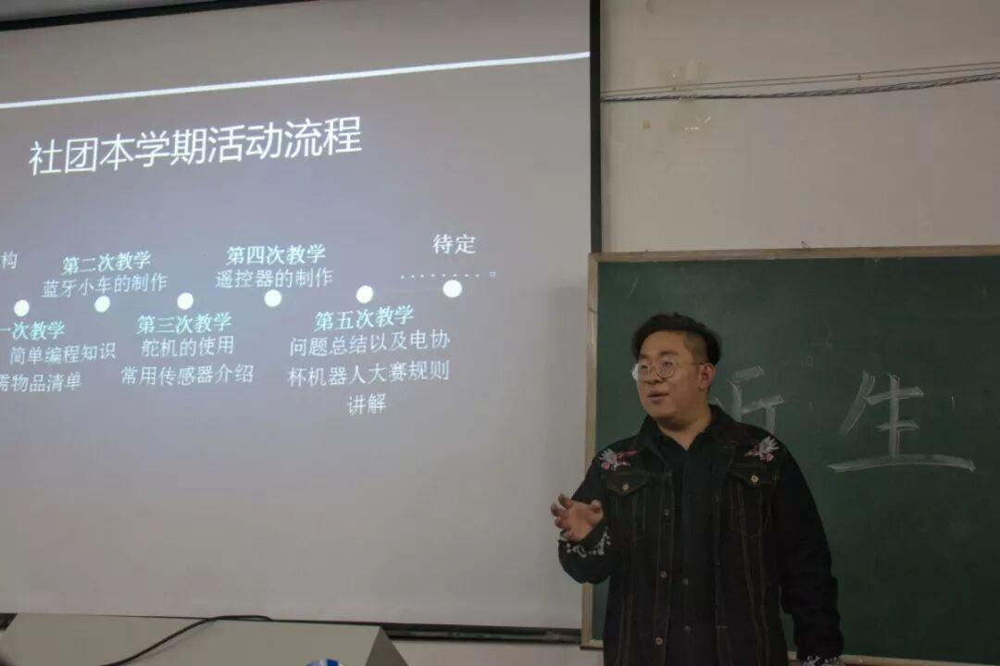
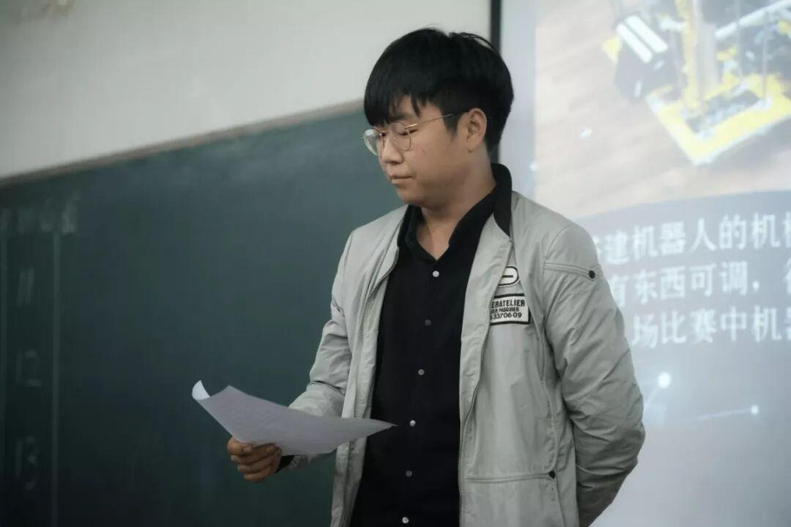
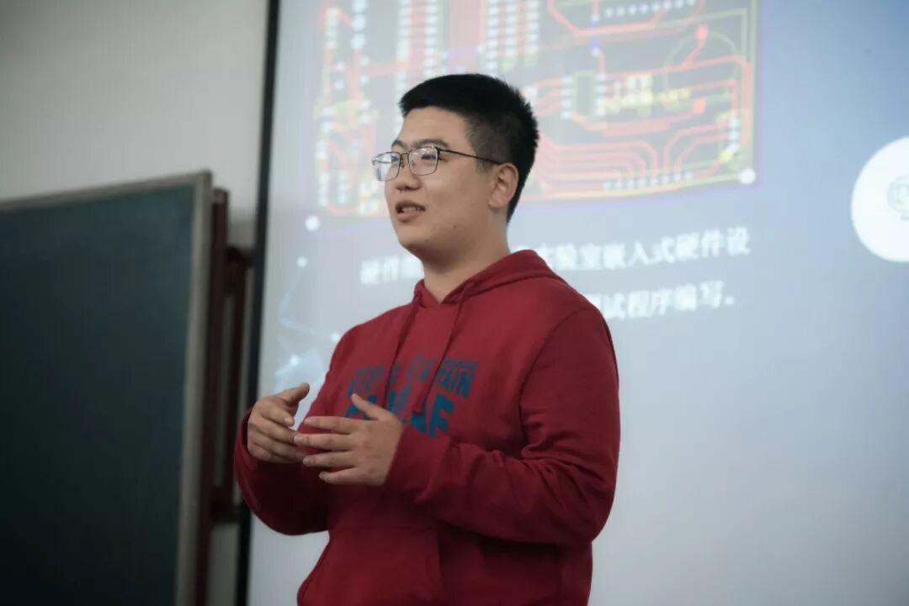
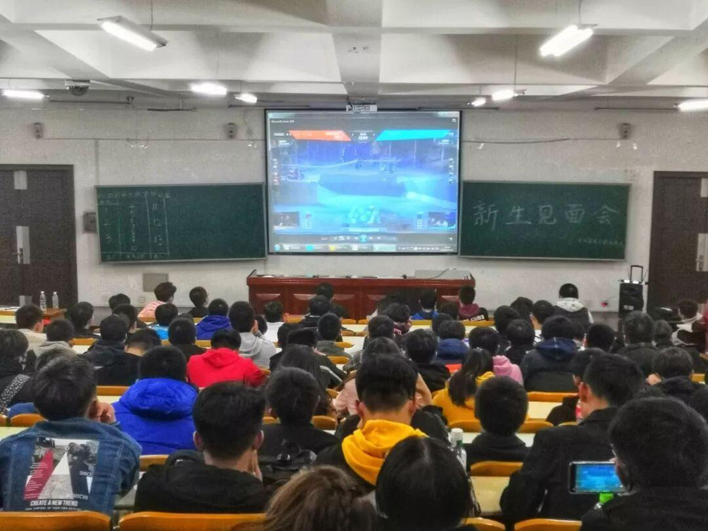
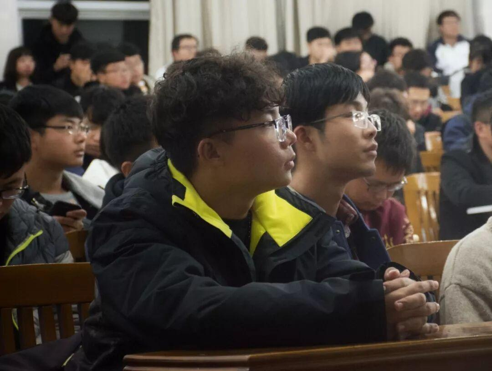
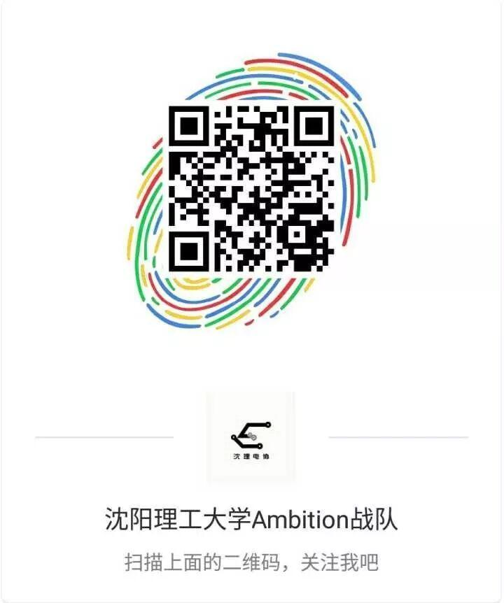

迎新见面会 | 电协十年，有你真好
迎新见面会 | 电协十年，有你真好
仲秋之际，叶落时分，纵心一跃，绯章初开。十月中下旬，十月十九日，当所有人员签到完毕，当两个教室座无虚席，我们期盼已久的网友见面会终于召开。
看完我们的热场视频，首先是二十六组组长的简单自我介绍，与组员打个招呼“认亲”。然后结合宣传视频，面对众多选择我们电协的新会员，台上某钧开始侃侃而谈，言语中丝毫不掩饰对电协的褒扬与自豪。他尽可能细致地描述社团的活动，深入浅出地讲述着电协的工作要务，使大家更加深入的了解我们这个大家庭，“诱拐”他们“入坑”和我们共同学习，努力，不断提升自己。

社长王枭学长更是对电协进行了深入分析，从加入社团初到未来就业，从零基础到技术大佬，从日常相处到工作氛围，让电协的模样，在我们眼前一点点清晰了起来。
团支部作为社团的精神指引，其介绍亦十分深刻。希望大家在听完团支书一席有力的话语后，在日后能充实自己的生活，在各活动中锻炼自己的能力，丰富自己的技能。
电协这样一个体系庞大作风严谨的社团，身后的部门当然的，必须的，理所应当的“五脏俱全”。通过介绍，相信大家都对各部门有了一定了解，不论是行政部还是技术部，电协的大门永远为意志坚定的人开放！

（领导范~）
当然，除了掌握应有的技能，部门的每个人都有个人的人格魅力：幽默，有！高冷，有！气场，有！高颜值……必须有的！

（这张图上的小哥哥可能是个意外>_<……）
最后，我们介绍了社团本学期将会举办的活动及我们Ambition战队，并播放了相关的几个比赛视频，如去年的理工杯。

其中，今年RoboMaster五月电子科技大学与华南理工大学的激烈对战，更是惊呆众人。要知道那些看起来似乎很好操作的器械，都是他们一点一点构思的，一键一键码出来，一块一块拼起来的，那炫酷的背后，是三天打鱼两天晒网吗？是走走停停歇了又歇吗？不，那是不为人知的艰辛，不为人道的刻苦！所以热爱生活的人儿，加油，跟我们一起学习起来吧！



编辑：罗 杰
图片：信息部
排版：黄思铭